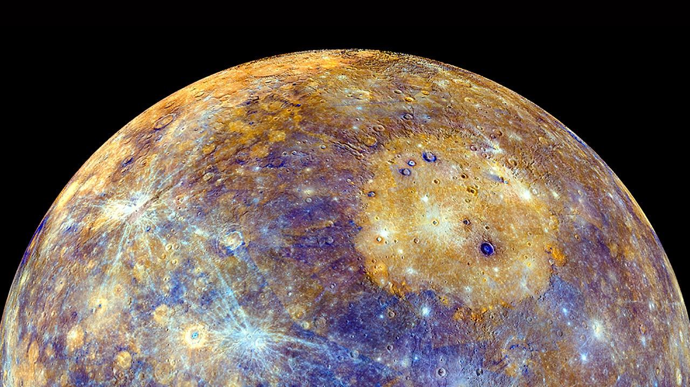
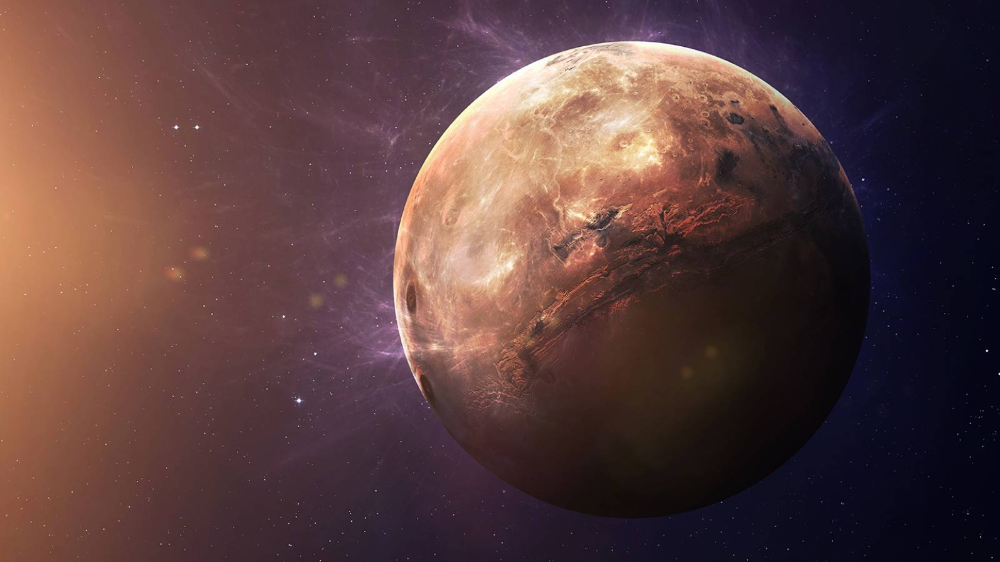

Suprafața planetei Mercur este foarte similară în aparență cu cea a Lunii, pe ea existând câmpii întinse gen „mare”
(numele de mare a fost dat de observatorii din antichitate care credeau că petele negre de pe suprafața Lunii sunt mări și oceane iar părțile luminoase sunt continente)
și cratere numeroase, indicând că planeta este geologic inactivă de miliarde de ani. Numărul mic de misiuni fără echipaj spre Mercur dovedesc că geologia acestei planete
este cea mai puțin înțeleasă dintre planetele terestre.
Gravitația planetei este prea mică și nu poate reține o atmosferă. Totuși există un fel de mini-atmosferă, numită exosferă. Aceasta este compusă din hidrogen, heliu, oxigen, sodiu, calciu
și potasiu.
Atmosfera planetei este compusă din atomi de gaz ce vin de la Soare, prin vântul solar, dar și din particule rezultate în urma impacturilor meteoriților cu suprafața.
O mare surpriză a fost descoperirea vaporilor de apă în atmosfera planetei, în 2008
Pentru că este atât de apropiată de Soare, pe Mercur, temperatura ajunge la 467° C, atât de mare încât se topește și plumbul. Din această cauză are o amosferă rarefiată, temperatura pe timpul
nopții scade la -183° C.
Totuși ar putea exista gheață pe Mercur, în interiorul craterelor situate la poli, unde nu intră lumina de la Soare niciodată.
Dacă am privi Soarele de pe Mercur, aceasta s-ar vedea de trei ori mai mare decat de pe Pământ. Un observator ce ar privi în direcția de unde răsare Soarele ar vedea ceva foarte neobișnuit:
Soarele răsare, se ridică pe cer și în acelasi timp se mărește ca diametru aparent; apoi, și-ar inversa mișcarea, s-ar apropia de orizont, dupa care se va ridica din nou pe cer,
dar diametrul sau aparent va scădea.
Formațiunile de pe Mercurs primesc nume după cum urmează:

Este cea mai apropiată de Soare și cea mai mică ca diametru dintre planete. Se rotește în jurul Soarelui pe o orbită ce o aduce la numai 47 milioane km de acesta. Face o rotație completă în jurul
Soarelui (anul mercurian) în 88 de zile terestre, având o viteză de 50 km/s, cea mai mare viteză dintre toate planetele.
În ceea ce privește rotația în jurul propriei axe (ziua mercuriană), aceasta este foarte lentă. Ziua pe Mercur durează 176 de zile terestre.
Cei mai înalți munți sunt Caloris Montes. Aceștia au o înălțime de până în 2000 metri. Sunt dispuși radial pe marginea bazinului Caloris, întinzându-se pe o lungime de 1000 km.
Chiar dacă există urme ale activității vulcanice, nici un vulcan nu a fost identificat până acum.
In interiorul planetei se afla un nucleu de fier, cu diametrul intre 1800 si 1900 km. Peste acesta se afla o manta din silicati, asemanatoare cu cea a pamantului, cu o grosime intre 500-600 km.
Aceasta planeta este a doua ca densitate din sistemul solar (primul fiind Pamantul). Rotirea nucleului duce la creearea unui câmp magnetic. Câmpul magnetic este doar 1% din cel al Pământului.
Mercur nu are sateliţi naturali, cu toate că uneori unii asteroizi se apropie de planetă.